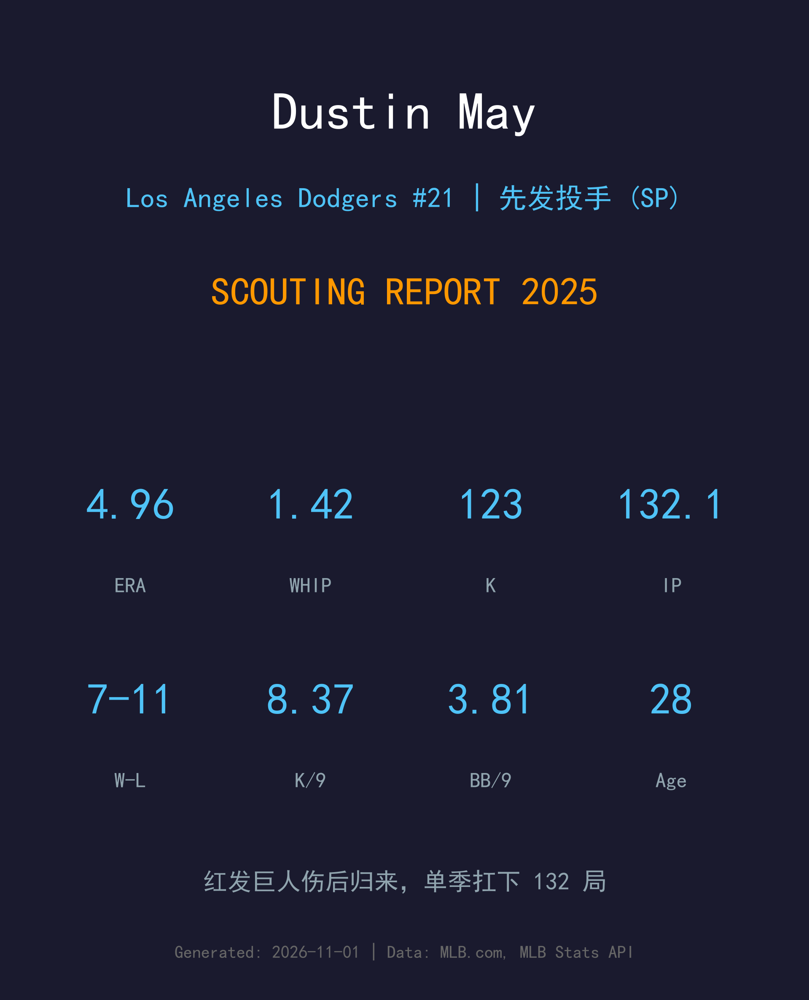
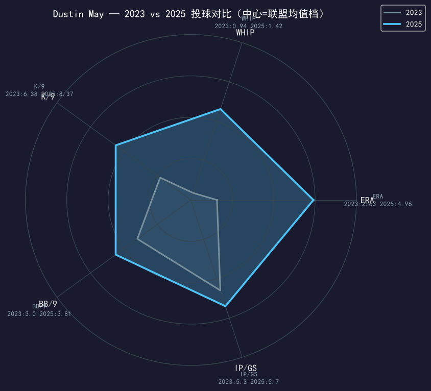
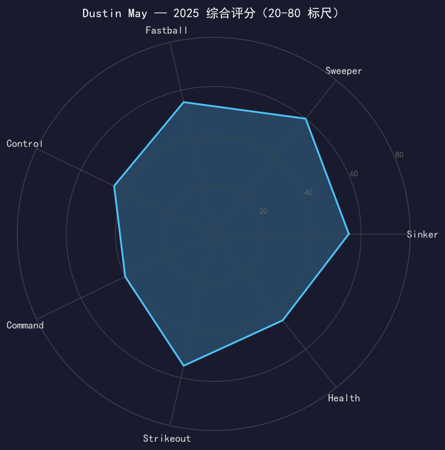

Los Angeles Dodgers #21 | 先发投手 | 右投 | 红发巨人伤后归来，单季扛下 132 局

Dustin May 是道奇 2016 年选中的红发巨人，2019 年登上大联盟，2020 年随队夺得世界大赛冠军。他的大联盟生涯始终被同一条主线牵引：天赋足以统治打线，身体却一次次按下暂停键。
2025 年——手肘重建手术缺席整个 2024 赛季后的回归年——他交出 25 场出赛（23 场先发）、7 胜 11 负、4.96 自责分率的成绩单。132.1 局的投球量是生涯新高，证明手臂完全经得起轮值负荷；但 1.42 的 WHIP 与每九局 1.43 支全垒打暴露了回归年的生涩：控球还在找回来的路上，球路偏高时被惩罚得很惨。
8.37 的三振率是生涯最佳水准，横扫滑球成为真正的主战武器。对于一个两年多没有完整赛季的球员来说，这一季的关键词不是「惊艳」，而是「撑住了」——而这正是道奇轮值最需要的。
新冠疫情缩水的赛季，May 作为球队重要投手随队夺冠，收下职业生涯第一枚戒指。
2019 年 8 月 2 日完成大联盟首秀，此后迅速站稳轮值，以重沉伸卡与 95+ mph 速球成为球队重点培养的自家先发。
9 场先发 4 胜 1 负、2.63 自责分率、0.94 WHIP——这是他手肘出问题前最后一个完整样本，也证明了健康时他是轮值前段级别的投手。
从手肘重建手术中走出，单季 23 场先发、132.1 局均为生涯新高，三振率刷新个人纪录——回归本身即是胜利。

| 赛季 | G | GS | W-L | ERA | WHIP | IP | SO | BB | K/9 |
|---|---|---|---|---|---|---|---|---|---|
| 2023 | 9 | 9 | 4-1 | 2.63 | 0.94 | 48.0 | 34 | 16 | 6.38 |
| 2025 | 25 | 23 | 7-11 | 4.96 | 1.42 | 132.1 | 123 | 56 | 8.37 |
两年对比呈现鲜明的「生涩回归」曲线：三振率从 6.38 跃升至 8.37（横扫滑球成熟的标志），但 WHIP 从 0.94 涨到 1.42、BB/9 从 3.00 升到 3.81——控球精度还没回到伤前水准。21 支全垒打（HR/9 1.43）是生涯最差，球数落后时的配球与进垒高度都需要重新打磨。
2025 赛季真实配球数据（MLB Stats API pitchArsenal）：
生涯首次成为第一球种。横向位移幅度大、进垒点跨越好球带边缘，是他制造挥空与软击的绝对主力，也让右打者吃尽苦头。
重沉的伸卡依然是他的立身之本，均速维持 94+ mph 显示手肘恢复良好；但进垒高度一旦偏高，被轰击的概率明显上升。
球速储备仍在，作为伸卡的陪衬抢好球数；占比下降说明他更依赖位移而非纯速。
对付左打者与破坏棒次的第四球种，与小球种变速球合计一成左右，功能性的存在。
评价 Dustin May 的 2025 年，必须先看背景：他上一次完整赛季还要追溯到 2023 年上半年。回归年投出 23 场先发、132.1 局、生涯新高，本身就意味着手肘重建完全成功。球速数据佐证了这一点——伸卡 94.5 mph、四缝线 95.4 mph，与伤前水准持平。
8.37 的 K/9 是生涯最佳，横扫滑球占比冲到 39.3% 是肉眼可见的进化。但 1.42 的 WHIP 与 3.81 的 BB/9 同样是生涯最差档——简言之：他的「 Stuff 」回来了，「 Feel 」还在路上。7 胜 11 负的败投数很大程度源于球数领先时的进垒不精细，以及被逆转局偏多。
21 支全垒打、HR/9 1.43 为生涯最差。飞球比例偏高（飞出局 134 对滚出局 127）加上球路偏高，让他在失误球上付出了惨重代价。这是回归年最常见的「找回配球感觉」问题，但若不改善，轮值位置会在竞争中变得危险。

伤后回归的轮值竞争人
B- 级 / 轮值后段
道奇 2025 季后赛夺冠之路：外卡 2-0 红人 → NLDS 3-1 费城人 → NLCS 4-0 酿酒人 → 世界大赛 4-3 多伦多蓝鸟。
May 未入选季后赛名单。常规赛末段他仍在轮值中轮替，但教练组最终在长中继与第五先发之间选择了更稳定的选项。
Dustin May 的 2026 年取决于两件事：控球能找回几成，以及全垒打数据能否回落。他的球速与三振能力都证明「 Stuff 」仍在轮值水准之上，如果 BB/9 回到 3.0 以下、HR/9 压回 1.0 附近，他完全有机会重新成为 3 号先发级别的投手。反之，若开季重蹈 4 月的覆辙，牛棚化将是不得不面对的选项。
理想剧本：控球回归 + 滑球延续进化，竞争轮值第 3-4 号位置
现实基准：第 5 先发与长中继之间的摇摆人，局数 130-150
下滑风险：若 WHIP 持续高于 1.40，可能被迫转型牛棚
Dustin May 出生于德州贾斯汀——一个连名字都像是为德州人准备的小镇。他标志性的火红卷发从高中时期就是他的注册商标，「Big Red」的绰号跟随他一路从德州业余联赛走进道奇农场。
2016 年选秀第三轮，道奇将这个瘦高的红发右投带回洛杉矶。他以惊人的速度攀升：2019 年 8 月 2 日完成大联盟首秀，同年就登上季后赛舞台；2020 年随队夺得世界大赛冠军，那枚戒指是他职业生涯迄今最高的顶点。
然而手肘伤势在 2023 年缠上了他。手肘重建手术（Tommy John）让他错过整个 2024 赛季，也让「伤前那个 2.63 自责分率的 May」成为道奇球迷反复追忆的幻影。2025 年他回来了——不再是天才新秀，而是一个必须重新证明自己的 28 岁老将。132.1 局，是他给出的第一个答案。